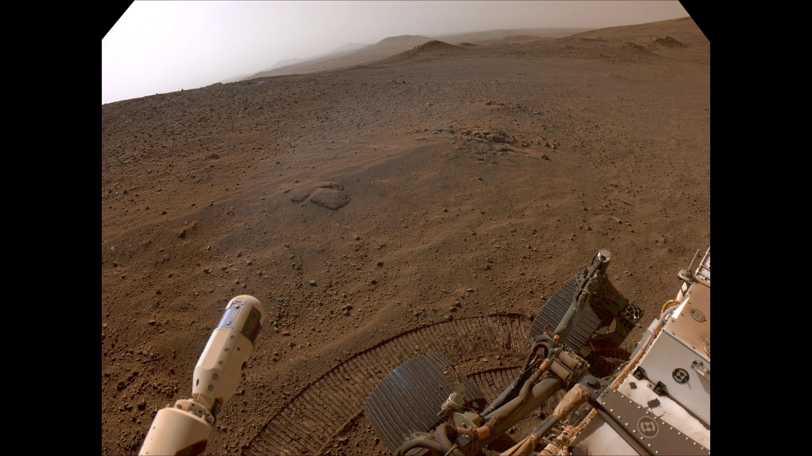
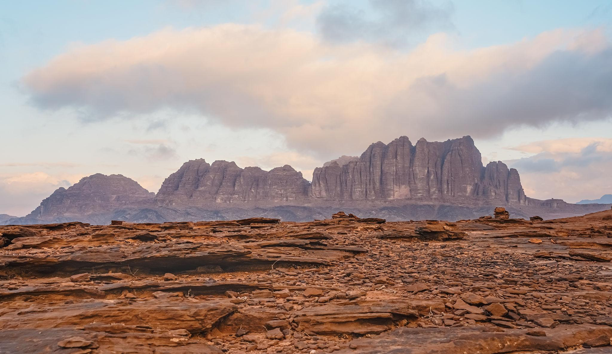
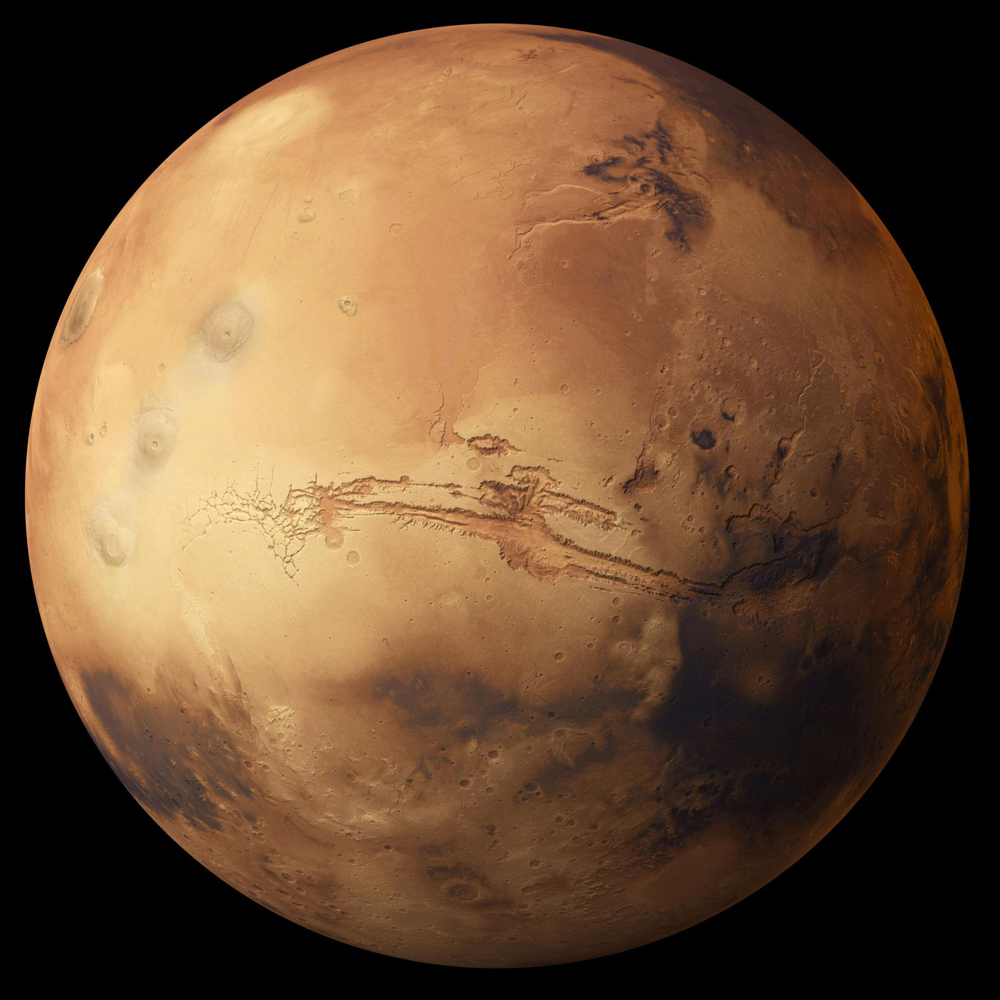

DEDICATED PLANET PAGE
Mars is a cold rocky world with red dust, giant volcanoes, dry river channels, and two small moons called Phobos and Deimos.
PLANET PROFILE
Mars is one of the easiest planets to spot from Earth. Its rusty colour comes from iron minerals in the surface dust. Scientists study Mars because it may once have had liquid water on its surface.
Rocky planet
About 24.6 Earth hours
Phobos and Deimos
The red planet
Mars has the largest volcano in the entire solar system called Olympus Mons.
Scientists discovered signs that rivers and lakes once existed on Mars.
Giant storms on Mars can spread across the whole planet for weeks.



“Mars is there, waiting to be reached.”